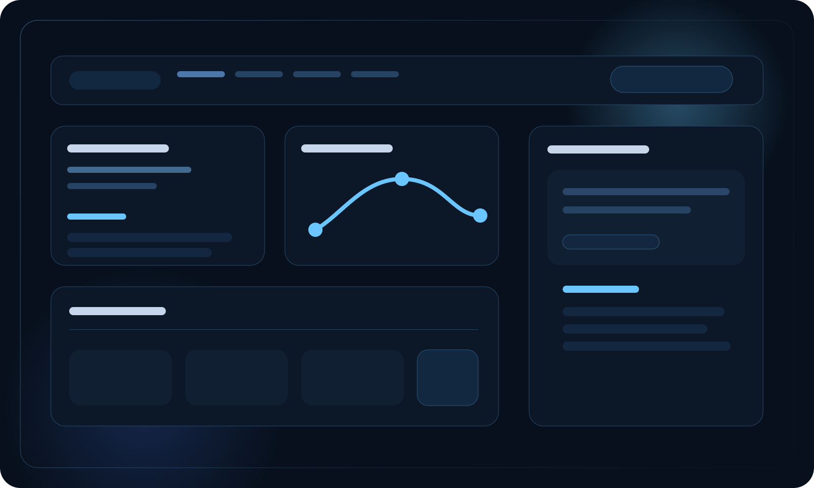
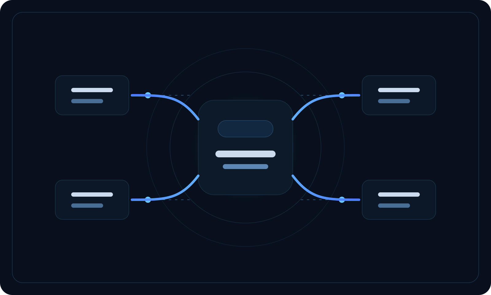

AI Automation
Automate repetitive business tasks, triggers, notifications, approvals, and follow-up logic.
AI Automation / Workflow Intelligence / Custom Systems
We help growing businesses automate operations, streamline workflows, and build AI-enabled systems that reduce manual work and scale with real-world execution.
Reviews / Approvals / Dashboards / Messaging / Integrations
Core Capabilities
Four focused capabilities turn fragmented tools and repetitive workflows into intelligent operating systems.
Automate repetitive business tasks, triggers, notifications, approvals, and follow-up logic.
Design internal tools for CRM, HR, approvals, client workflows, dashboards, and operating visibility.
Ship customer and team-facing portals, web apps, and mobile-ready experiences with clear business purpose.
Connect platforms, consolidate data, and turn isolated tasks into one coherent workflow chain.
Execution Model
We keep the process commercial, structured, and measurable from discovery to rollout.
Map current operations, identify manual bottlenecks, and isolate high-value automation targets.
Define rules, triggers, handoffs, and exception handling that fit how the business already runs.
Develop the app, workflow, dashboards, integrations, or assistant required for execution.
Deploy, observe adoption, refine edge cases, and extend automation to adjacent business functions.
Solution Views
Each solution area is framed around a concrete operational use case and the workflow behind it.
Order completed
Message sent, sentiment scored, follow-up routed
Low-rating responses are diverted to internal recovery before public posting.
Attendance, timesheets, notifications, reporting
Live status boards replace scattered updates and manual chasing.
Faster approvals, cleaner records, fewer dropped internal tasks.
Rules-based approval chains with escalation thresholds
Every handoff, decision, and exception stays visible in one place.
Manual follow-up drops while accountability improves across departments.
Secure dashboards for documents, tasks, messages, and progress visibility
Form submissions trigger downstream actions automatically.
Less email confusion and stronger client experience across service delivery.
Web chat, internal workspaces, email intake, service desks
Summaries, lookups, triage, routing, and context-aware responses
Teams spend less time searching and more time executing decisions.
System Previews
A stronger visual layer helps visitors understand that these are real systems, dashboards, and automation flows rather than abstract claims.

Use interface-led visuals to show that your solutions are structured, measurable, and built for daily execution.

These image panels add rhythm to the page and reinforce the idea of intelligent systems moving across the business.
Industry Fit
Intake, approvals, reporting, delivery tracking, and client communication flows.
Order handling, review systems, support automation, and inventory-linked notifications.
Administrative workflows, bookings, reminders, forms, and internal coordination layers.
Guest communication, service recovery, scheduling, and operational handoff management.
Movement visibility, request routing, milestone alerts, and exception handling systems.
Enrollment, learner progress, communication workflows, and staff-facing portal experiences.
Partner Work
A partner section adds proof without turning the page into a wall of logos. We can keep it selective and credible.
We have already supported Nuctech Sydney with automation work, and this section turns that into a clean proof point on the homepage.
By pairing the partner logo with a visual system panel, the section feels premium and integrated with the rest of the site.
Selected Outcomes
Problem Manual review chasing led to low response rates and no internal handling for negative feedback.
Solution Built an automated request flow with sentiment branching and team escalation.
Outcome Faster follow-up, stronger review volume, and centralized brand protection.
Problem Budget and leave requests were delayed by email bottlenecks and inconsistent records.
Solution Deployed a custom approval system with rule-based routing and audit trails.
Outcome Manual admin reduced, approval speed improved, and visibility increased across leadership.
Problem Enrollment, reminders, and status updates were split across spreadsheets and manual follow-up.
Solution Built a staff dashboard and portal with automated communication sequences.
Outcome Better response time, clearer ownership, and one source of operational truth.
Why Beyond Perception
We deploy AI to solve workflow constraints, not to decorate a pitch deck.
Solutions are shaped around your process architecture instead of generic templates.
We optimize the full operational chain, not isolated features.
What gets launched is designed to expand as the business adds new workflows and teams.
Brand Statement
We design intelligent systems for businesses ready to scale with precision.
Start the Conversation
Tell us how your business works. We'll identify what can be automated, optimized, or rebuilt with AI.